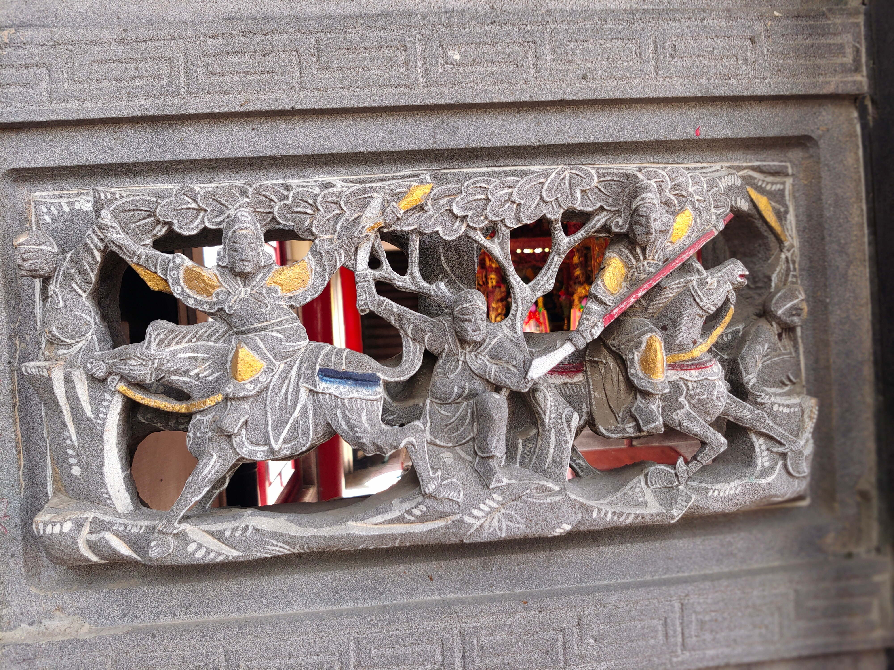

趙雲戰李典
會說話的石頭

圖 趙雲戰李典
建安五年（西元200年），官渡之戰爆發，原先與關羽、張飛失散的劉備藉此機會重逢，並於汝南一地依附當地領袖劉辟、龔都等，企圖於曹操背後發動奇襲；然而翌年（西元201年），於官渡和倉亭之戰大獲全勝的曹操，決定回頭剷除位於背後的威脅，劉備在穰山之戰失利後，被迫逃往荊州投靠劉表；獲得劉表賞識的劉備，則被委以守衛荊州北方的重任，駐屯於新野。 建安七年（西元202年），劉表企圖趁曹操北上攻擊袁尚的契機，襲取許都，乃派遣劉備領軍出擊，發兵至博望一地，與曹操軍的夏侯惇遭遇，開啟戰端。 交戰過程中，劉備刻意派出少數軍隊與夏侯惇交戰，並故意敗退；而後又燒毀自軍營寨。種種跡象讓夏侯惇誤判劉備無力再戰，故持續追擊。然而，當行進至狹窄的林間山道時，劉備安排的伏兵突然殺出，夏侯惇應對不及，只有敗退。 然而，曹軍從河北回援的李典早已料到劉備會使出伏兵計策，故指揮自軍人馬前往攻擊劉備，救出了夏侯惇，之後兩軍撤退。 建安十二年（207年）冬，劉備「三顧茅廬」拜訪諸葛亮[1]，因此博望坡之戰時諸葛亮仍未出山。 博望坡戰後，劉備一方的趙雲俘虜了曹軍的夏侯蘭。由於趙雲與其有同鄉之誼，因此向劉備求情赦免死罪之餘，更推薦他擔任劉備的軍正一職；而後劉備接受了趙雲的請求。而至此之後，趙雲為避嫌便不再跟夏侯蘭有私下往來。
資料來源： https://reurl.cc/mYG0zl